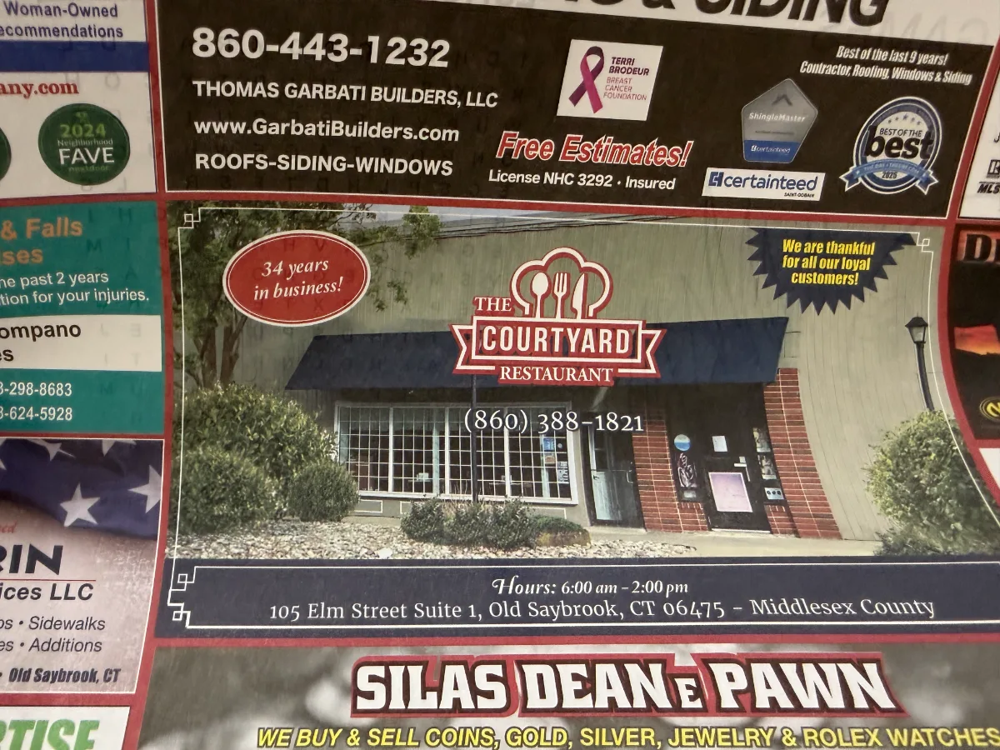

Breakfast
- 1 Egg, Toast & Home Fries
- 4.99
- 1 Egg with Bacon, Ham, Sausage or Kielbasa
- 6.99
- 2 Eggs, Toast & Home Fries
- 6.49
- 2 Eggs with Bacon, Ham, Sausage or Kielbasa
- 8.49
- Corned Beef Hash, 2 Eggs & English Muffin
- 10.49
Old Saybrook Shopping Center · Since 1995
Old Saybrook's neighborhood breakfast & lunch diner.
Big plates, friendly counter, fresh specials every day.
Open daily for breakfast & lunch · Cash only
What's good today
A snapshot of today's specials board — updated by the kitchen each morning. Call 860-388-1821 with questions.

Our specials change most mornings — the kitchen snaps a photo of today's board so you can see what's on before you come in. Until the next update, pop in or call 860-388-1821. We're open until 2 PM.
Heads up before you visit
No credit, no debit, no Apple Pay — just cash, the way diners used to be. It keeps prices low and the line moving.

We're tucked back in there
We sit behind the bigger stores along Elm Street — it can be hard to spot the first time, so here's a map with the route highlighted.

The Courtyard Restaurant
105 Elm St #1
Old Saybrook, CT 06475
860-388-1821
What folks are saying
A few favorite reviews from Google — and there are plenty more where these came from.
"If you're looking for the best breakfast in Old Saybrook, this is it. The food is consistently on point — legit homemade vibes. The biscuits and gravy are a must, and the eggs are always cooked exactly right (which sounds simple… but isn't everywhere). Prices are more than fair, portions are solid, and the whole place just feels comfortable and genuine. Service is friendly, quick, and makes you feel like a regular even if it's your first time. Definitely one of those shoreline go-to spots."
"This LITTLE RESTAURANT IS AN ABSOLUTE GEM! It's a modest little establishment tucked directly behind Home Goods. The decor design is very much early 1970's — tile floors with 10–12 Formica tables & counter seating. IT'S ADORABLE! THE FOOD IS FABULOUS & PRICED EXTREMELY REASONABLE. They SERVE BREAKFAST ALL DAY! They also offer delicious lunch items ranging from pot roast, spaghetti to patty melts. They have AN ARRAY OF DELICIOUS CHALK BOARD SPECIALS DAILY! THE STAFF ARE LOVELY. I have been going weekly for 2+ yrs & I have had NOTHING but KIND, HELPFUL, COURTEOUS, EFFICIENT SERVICE. HIGHLY RECOMMENDED!"
"I stumbled across this place while putting together a dining guide for the shoreline, and I'd never heard of it before. After reading the reviews, I knew I had to check it out — and they did not lie! This spot is a little tucked away, so keep your eyes peeled, but it is absolutely worth the effort. The biscuits and gravy were outstanding — hearty, homemade, and full of flavor. My eggs were cooked perfectly. And the staff and owner couldn't have been nicer — genuinely friendly and welcoming in a way that makes you feel right at home. Just a heads up — it's cash only, but the prices are so reasonable you won't mind one bit. This is exactly the kind of hidden gem the Connecticut shoreline needs more of. I'll definitely be back, and I'll be telling everyone I know."
"Great service and food with reasonable prices. It is a cash only place."
"Homey atmosphere and great quality food! Friendly service adds to the homeyness and the restaurant is making great strides under new ownership. Highly recommend for anyone looking for a cozy and affordable breakfast spot in the area!"
4.6 ★ · 72 reviews on Google
Inside the diner


| Monday | 5:30 AM – 2:00 PM |
|---|---|
| Tuesday | 5:30 AM – 2:00 PM |
| Wednesday | 5:30 AM – 2:00 PM |
| Thursday | 5:30 AM – 2:00 PM |
| Friday | 5:30 AM – 2:00 PM |
| Saturday | 6:00 AM – 2:00 PM |
| Sunday | 6:00 AM – 1:00 PM |
Take-out available during open hours — call 860-388-1821.
The Courtyard Restaurant
105 Elm St #1
Old Saybrook, CT 06475
860-388-1821
Payment: Cash only
Service: Dine-in & take-out